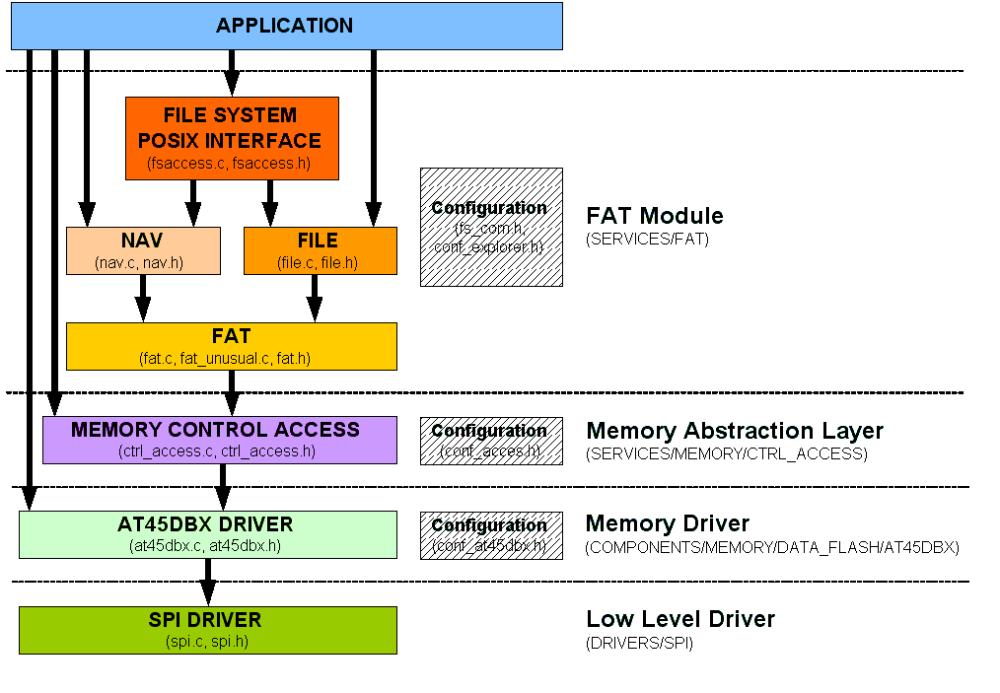

Back to SERVICES page
AVR UC3 Series Software Framework: FAT Module
Copyright © 2007 Atmel Corporation
Introduction
The File Allocation Table or FAT is the structure used by the filesystem to know where the files have been saved on the disk.
The FAT links a file to the sectors of the disk where its content has been stored.
The FAT file system module supports FAT12, FAT16, FAT32 file system.
Two examples are available:
a SHELL example to issue some commands (ls, mount, cat, etc).
an example to use POSIX interface to FAT accesses (open, read, write, close).
FAT Module
The module is composed of:
fat.c and fat.h: FAT functions.
fat_unusual.c: set of rarely-used FAT functions.
file.c and file.h: file access functions.
fs_com.h: definition for FAT module interface.
fsaccess.c and fsaccess.h: file access functions with POSIX interface.
navigation.c and navigation.h: file navigation functions.
The FAT module needs a memory to be used. In the provided examples, the memory used is a AT45DBX Dataflash, using SPI.
The FAT memory interface is using the Memory control access module (/SERVICES/MEMORY/CTRL_ACCESS), which is a memory abstraction layer.
Here is the drawing for the File System Layers :

Terminology
The following terminology can be found in the module or in the module interface. An advanced description of the FAT can be found
here.
Clusters: Single unit of data storage at the FATxx file system logic level. A cluster is a set of 1 or more sectors and it is the smallest storage unit. A cluster is either free or used, it can't be shared by several files. Clustering allows the increase of storage space because the FAT refers to cluster numbers instead of logical sector numbers. For instance, if you put 4 sectors into each cluster, each cluster will hold 2048 bytes, the maximum cluster number is 65535 for FAT16 and this gives a capacity of about 120 Mb. The drawback to this method is waste of storage space. If a cluster is only partially used by a file, the remaining part of the cluster contains no useful data but is unusable for other files. If you use clusters of 1 sector and the sector size is 512 bytes, this leads to a waste of maximum 511 bytes (when the file uses 1 byte of the cluster). But when the cluster size is 4 sectors with the same sector size, this leads to a waste of maximum 2047 bytes. The more sectors you group into one cluster, the more space you waste. This is especially annoying when you have a lot of small files.
FAT: File Allocation Table, a data structure present in all FAT volumes
FAT1: The first copy of the FAT
FAT2: The second copy of the FAT
FAT12: FAT file system using 12-bit cluster addressing
FAT16: FAT file system using 16-bit cluster addressing
FAT32: FAT file system using 32-bit cluster addressing; Win95 SR2 and later
FAT or FATxx: File systems that use File Allocation Tables, etc.
VFAT: The 32-bit code used to operate the file system in Win9x GUI mode
Sector: Single unit of storage at the physical disk level
Physical sector address: Sector address in absolute physical hardware terms
CHS sector address: address expressed in Cylinder, Head, Sector terms
Logical sector address: Sector address relative to the FATxx volume. From a physical viewpoint, the data on floppy disks or hard disks is organized in tracks, heads and sectors. You can find the data on the disk if you know the track, the head and the sector where it is. The number of tracks, heads and sectors is dependent on the type of disk. FAT hides theses differences between disks by using the concept of logical sector. The physical sectors are assigned a serial number. This serial number is the logical sector number corresponding to the physical sector.
Folder: A collection of named items as seen via Windows Explorer
File Folder: Modern Windows-speak for "directory"
Directory: A file system data structure that lists files and/or directories
Directory entry: Points to a file or directory, and contains info about it
Attributes: A collection of bits in a directory entry that describes it
LFN: long file names